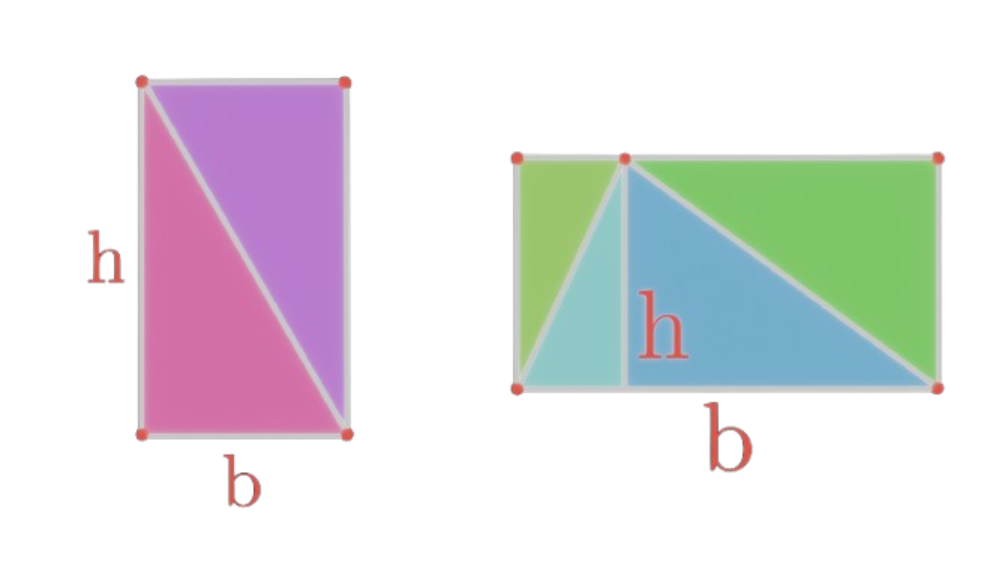
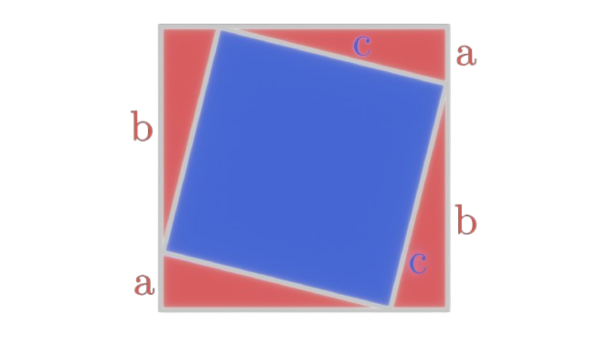
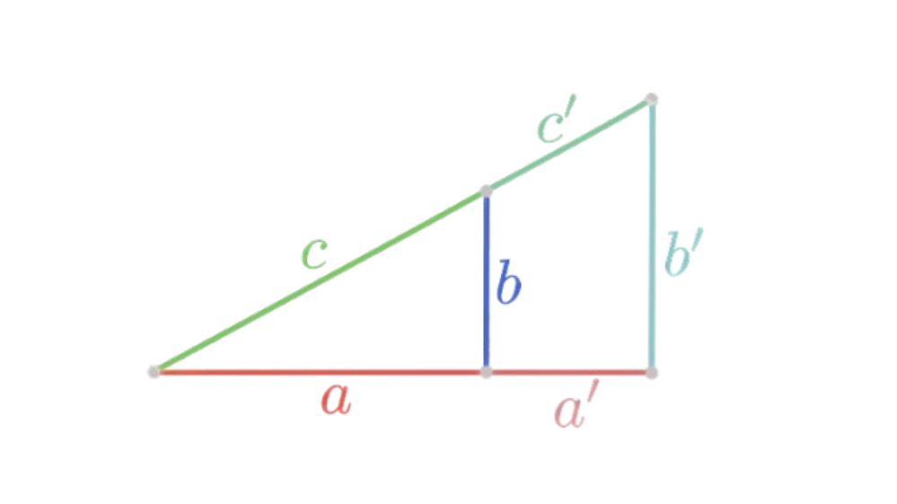

A triangle is a shape contained by three points. We write their sides as a, b and c, with the vertices opposite
their corresponding side as A, B and C. For the angles we use the greek letter of the vertex, so \(\alpha, \beta, \gamma\).
Instead of shortening their side to one small letter, we can also denote them by their vertices, so for example,
the line from A to B would be written as \(\overline{AB}\)(which is equal to c).
We differentiate between three types of triangles.

The area of a triangle is half the area of a rectangle with the same base and height as the triangle.
These are the ones we will mainly work with during this chapter, as to why will be covered when we talk about the other types of triangles.
A right-angled triangle is characterized by the fact that it has one right angle (obviously :3). This is the easiest kind of triangle to work with.
The side that is opposite of the right angle is called the hypotenuse, and it is the longest side in a right triangle.
The other sides are called either the legs of the triangle, or the base and the height of the triangle.
We usually call the legs of the triangle a and b, while the hypotenuse is denoted by c.
Notice that if we copy a right triangle and rotate it by 180° then fit it together with the original triangle
it forms a rectangle with the legs of the triangle being the sides of the rectangle and the hypotenuse being the diagonal of the rectangle.
Therefore, the rectangle has a length a, width b and diagonal c. The area of this rectangle is \(A = a\cdot b\), which is simultaneously twice
the area of the original triangle, therefore the area of a right-angled triangle with legs a and b is: \(A = \frac{a\cdot b}{2}\)
or generally, using the same argument, the area of any triangle is \(A = \frac{b\cdot h}{2}\),
where b is the base and h is the height.
Example: Find the area of a triangle with base of length 12cm and height 70mm.
Solution: First we convert from mm to cm, so \(b = 12cm, h = 7cm\). Therefore: \(A = \frac{12cm \cdot 7cm}{2} = \frac{84cm^2}{2} = 42cm^2\).

Visual Setup for Proof of Pythagorean Theorem
Construct a diagram of a square with side length a + b consisting of four triangles with legs a and b and hypotenuse c, with a smaller square in the centre of side length c
(see right side). We have no way of relating c to a or b, however we can find the area of the square with side length c,
since it is simply the area of the whole square minus the area of those four triangles. We know the area of the whole square is \((a+b)^2\) which we can
expand using the distributive property: \((a+b)^2 = (a+b)(a+b) = a^2 + ab + ba + b^2 = a^2 + 2ab + b^2\), and we know the area for a triangle of base a and height b is
\(A = \frac{a\cdot b}{2}\), and since we have four of these triangles the area of all of them is going to be \(4\cdot A = 2a\cdot b\). Therefore,
the area of the smaller square, which is \(c^2\), is the difference of the area of the large square and the area of the triangles, so:
\(c^2 = a^2 + 2a\cdot b + b^2 - 2a\cdot b\), which simplifies to \(a^2 + b^2 = c^2\). This relation is known as the Pythagorean Theorem.
Example 2: Find the hypotenuse of a right triangle with base 4m and height 3m.
Solution: \(c^2 = (3m)^2 + (4m)^2 = 9m^2 + 16m^2 = 25m^2\). To then get the hypotenuse c we must take the square root of our result.
So: \(c = \sqrt{25m^2} = 5m\).
As we've learnt, usually the square roots of numbers are irrational, however in our case the hypotenuse has an integral length.
Triangles for which the legs as well as the hypotenuse have integral values are special, and their side lengths are called
Pythagorean triples. An example of such a Pythagorean triple, we just encountered, is 3, 4, 5.
Exercise: Show that 5, 12, 13 is also a Pythagorean triple and interpret it geometrically.
If the hypotenuse and a leg is known, then we can solve the Pythagorean Theorem for the wanted leg.
Example 3: The hypotenuse of a triangle is 20cm, while its base is 5cm. What is this triangle's height?
Solution: We know that \(c^2 = a^2 + b^2\), where a is our base and b is our height, so to solve for the height
we must subtract \(a^2\) from both sides and then take the square root. So: \(c^2 - a^2 = b^2 = (20cm)^2 - (5cm)^2
= 375cm^2\). Taking the square root we get that the height of the triangle is \(\sqrt{375cm^2} \approx 19.365cm\).
There also exists the inverse Pythagorean theorem which relates the sides of a triangle to the perpendicular upon
the hypotenuse, the height.
We know that the area of a triangle is \(A = \frac{b\cdot h}{2}\), where, in one case, we have the base = a and height = b
and on the other hand we have the base = c and height = h, therefore \(\frac{a\cdot b}{2} = \frac{c\cdot h}{2}\).
Let's multiply both sides by 2 to get \(a\cdot b = c\cdot h\) and then square both sides, since then, on the
right hand side, we get \(c^2\) which we can write as \(a^2 + b^2\), so:
\(a^2\cdot b^2 = c^2\cdot h^2 = (a^2+b^2)h^2\). Now let us divide by \(h^2\) and \(a^2\cdot b^2\) and then solve
the corresponding fraction, so:
\(\frac{1}{h^2} = \frac{a^2+b^2}{a^2\cdot b^2} = \frac{a^2}{a^2\cdot b^2} +
\frac{b^2}{a^2\cdot b^2}\). Then we simply cancel the \(a^2\) and \(b^2\) respectively, to get to the
inverse Pythagorean theorem: \(\frac{1}{h^2} = \frac{1}{a^2} + \frac{1}{b^2}\). Although we are making
heavy use of algebra, which we shouldn't be doing, I just want to have included this for semi-completeness.
No worries about missing out though, the algebra heavy stuff and algebra-concentrated geometry will be done extensively in the algebra section.
Of these, we differentiate between two types: acute-angled triangles and obtuse-angled triangles.
These are as right-angled triangles, except their right angle was replaced with an acute or obtuse angle respectively.
The study of these general triangles will be done extensively in the Trigonometry Tier, since it
requires trigonometric functions. For now, we will only focus on right-angled triangles.
A special property of all triangles is that their angles add up to 180°. The proof
for this is omitted here, but you can check it out here: Sum of angles proof.

Similarity of Triangles
Similarity describes, in maths, that two shapes look alike, mathematically, that
two shapes are transformed versions of each other. In our case, this transformation is a scaling,
meaning that triangles are similar to each other if they are scaled versions of each other,
and similar triangles have special properties which makes calculations between them easier.
Let's derive the rules for similar triangles. Say we have a triangle with sides a, b and c. Then
a similar triangle is any scaled version of this triangle, meaning that every side was scaled by some constant k,
therefore the sides of the similar triangle are ka, kb and kc. Call them a', b' and c'. (Note that a' is the same as ka).
We can relate the sides of the similar triangles as follows: \(\frac{a'}{a} = k, \frac{b'}{b} = k, \frac{c'}{c} = k\).
Things equal to something common equal each other, so, this holds for all similar triangles:
\(\frac{a'}{a}=\frac{b'}{b}=\frac{c'}{c}\).
Example 4: Two similar triangles \(\Gamma\) and \(\Delta\) are given. \(\Gamma\) has a base of 5cm and a height of 8cm.
\(\Delta\) has a height of 10cm. How long is the base of \(\Delta\)?
Solution: It's given that the triangles are similar, so the rules for similarity apply. For \(\Gamma\)
we have a = 5cm and b = 8cm, while for \(\Delta: \:\: b' = 10cm\). We must find \(a'\).
By similarity rules we have: \(\frac{5}{8} = \frac{a'}{10}\). After multiplying by 10 on both sides
we receive the length of the base, that is: \(a' = 10\cdot \frac{5}{8} = \frac{25}{4} = 6.25\).
But how do we find out for which triangles these rules apply? There are certain rules which identify similar
triangles. The most obvious one is if all the sides of a triangle are scaled versions of another, then the triangles are similar.
Notice also that, for these triangles, all the angles are the same. Furthermore, we know that the sum of the angles
in a triangle is 180°, so when two angles are known, the other one is automatically known as well, which leads us to our
next rule: Two triangles are similar if they have two equal angles. Lastly, two triangles are similar if they have
two similar sides and the angle between them equal. This is because there's only one way to have a triangle
if two lines and the angle between them is given. Furthermore, this is because those two lines have only one
straight line which can connect them, since their relative position in space is uniquely determined by the angle between
them. Once you've connected the lines you have the first case of similarity.
Example 5: Two right-angled triangles \(\Gamma\) and \(\Delta\) are given. \(\Gamma\) has a base of 3m and a hypotenuse of 4m.
\(\Delta\) has a height of length 5m and a hypotenuse of 6.25m. Are these triangles similar? If so, find
the constant of scaling k.
Solution: There are many ways to do this, but the main way is to get all the sides of both triangles and check
their ratios. If all of their ratios are the same constant they are similar.
For \(\Gamma\): a = 3m, c = 5m \(\to b^2 = c^2 - a^2 = (25m)^2 -(3m)^2 = 16m^2 \to b = 4m\).
For \(\Delta\): b = 5m, c = 6.25m \(\to a^2 = c^2 - b^2 = (6.25m)^2 - (5m)^2 = 14.0625m^2 \to a = 3.75m\).
Check ratios: \(\frac{3.75}{3} = 1.25, \frac{4}{5} = 1.25, \frac{5}{6.25} = 1.25\). Therefore, these
triangles are similar with k = 1.25.
Example 6: Two triangles X and Y have sides a = 50mm, b = 32mm and a = 61.7mm, b = 39.488mm respectively, with the angle
between them being 50°. Determine whether these triangles are similar.
Solution: We can't work with any equations since we don't know whether or not this is a right triangle.
Instead, we just look if these two lines are similar by checking their ratios.
\(\frac{61.7mm}{50mm} = 1.234, \frac{39.488mm}{32mm} = 1.234\), therefore these two triangles are similar.
Note that it does not matter which number we put in the numerator/denominator, as long as we're consistent,
so that the side from one triangle is always either in the numerator or the denominator, not once in the
numerator and once in the denominator.
Exercise: Say you have two similar triangles and you do incorrectly try this. How is \(\frac{a'}{a}\)
related to, say, \(\frac{b}{b'}\)? How is the latter expression related to k?
We can also proof the Pythagorean theorem using similarity of triangles. See Proofs.
For squares and rectangles the diagonals are the lines connecting the vertices which aren't directly connected to each other already. This line forms the hypotenuse of a right-angled triangle with the sides of the shape being the legs of the triangle. For a square of sidelength s its diagonal has a length of \(s \cdot \sqrt{2}\). Proof: A square has a side length s. Therefore, its diagonal is a right-angled triangle with it's legs being the sidelength s. Therefore, the hypotenuse, which is at the same time the diagonal d, \(c^2 = d^2 = s^2 + s^2 = 2s^2\). From which follows: \(d = s\sqrt{2}\). For a rectangle of length \(\ell\) and width w its diagonal is: \(d^2 = \ell^2 + w^2\).
1.) \(A = 7.5cm^2\)
2.) \(A = 36mm^2\)
3.) \(A = 4m^2\)
4.) \(A = \frac{1}{2}m^2\)
5.) \(c = \sqrt{52}cm\)
6.) b = 3m
7.) a = 5cm
8.) \(c = \sqrt{5}\)
9.) \(k_1 = 2.6, k_2 = \frac{5}{13} \to a_2 = 12cm, b_1 = \frac{25}{13}cm\). Now we check we computed the sides correctly by applying the pythagorean theorem. So
\[(c_1)^2 - (a_1)^2 = (b_1)^2 \\ (5cm)^2 - (4.615cm)^2 = \left(\frac{25}{13}\right)^2 \\ LHS = (5cm)^2 - (4.615cm)^2 = 3.7cm^2 \\ RHS = \left(\frac{25}{13}\right)^2 = 3.7cm^2 \checkmark\]
Let's check the second triangle.
\[ (a_2)^2 + (b_2)^2 = (c_2)^2 \\ (12cm)^2 + (5cm)^2 = (13cm)^2\]
We recognize this pythagorean triple, so these triangles are similar.
10.) \(\frac{a_1}{a_2} = \frac{b_1}{b_2} = k = 0.2857...\) They are similar.
11.) \(\frac{a_2}{a_1} = \frac{5}{3}\), so we expect \(b_2 = b_1 \cdot \frac{5}{3} = \frac{25}{3}\). We recognize the second triangle's sides as those of a pythagorean triple,
so \(b_2 = 12cm \neq \frac{25}{3}\). Therefore, they aren't similar.
12.) \(\frac{a_1}{a_2} = \frac{b_1}{b_2}\) and \(\frac{a_1}{a_3} = \frac{b_1}{b_3}\) so the three triangles are similar.
13.) \(\frac{a_1}{a_2} = \frac{b_1}{b_2}\), however \(\frac{a_1}{a_3} \neq \frac{b_1}{b_3}\), so all three triangles are not similar to each other.
14.) d = 10\(\sqrt{2}\)m
15.) d = 1cm
16.) d = 13cm
17.) d = 25mm